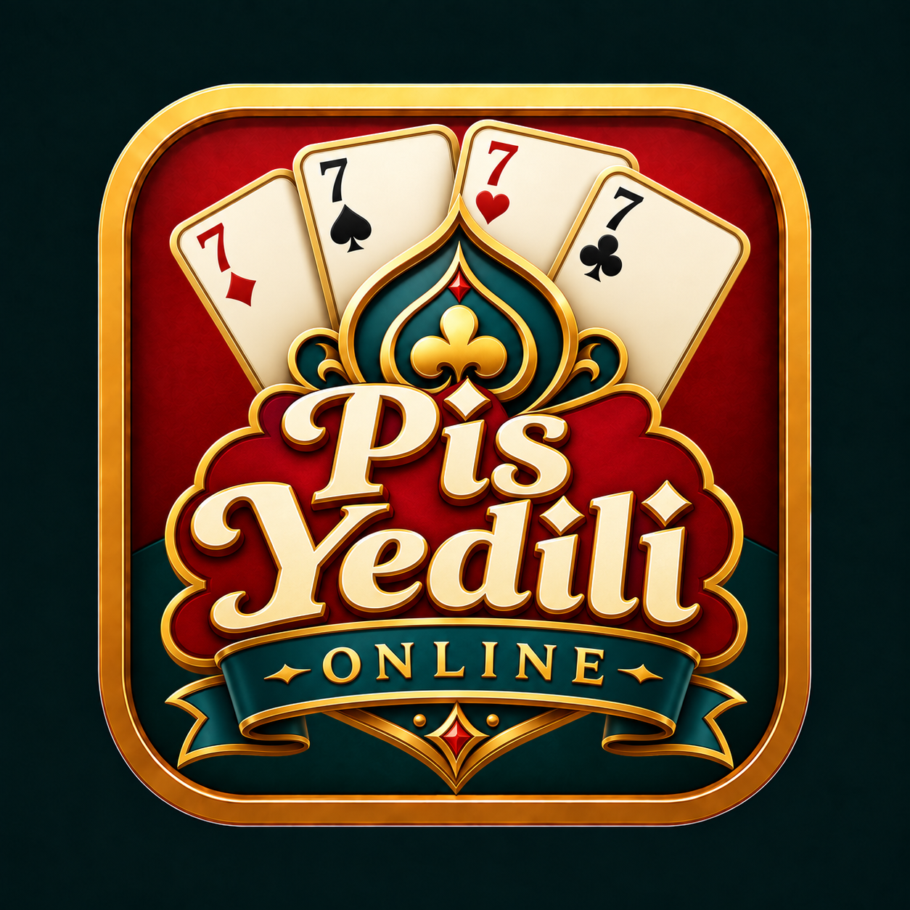

Masana karar ver
2, 3 veya 4 kişilik masayı seç. Eksik koltuklar botlarla tamamlansın; sen oyunda kal.

Pis Yedili: Online2–4 kişilik çevrim içi kart oyunu
Klasik Pis Yedili, canlı rakipler ve arkadaşlarınla özel masalar. Hızlı bir maç aç, hamleni planla ve son kartını oyna.
iPhone ve iPad için hazırlanıyor · App Store yayını yakında
Oyunun içinde
2, 3 veya 4 kişilik masayı seç. Eksik koltuklar botlarla tamamlansın; sen oyunda kal.
Oyuncu koduyla arkadaş ekle, özel oda kur ve davetini paylaş.
Yedili cezasını aktar, valeyle tür seç, sekizle sıra atlat. Elini ilk bitiren sen ol.
Oyun coinlerinle kart arkaları aç, avatarını seç ve profilini kişiselleştir.
Hazır mesajlar ve emoji tepkileri kullan. Oyuncu bildirme ve engelleme seçeneklerini yönet.
Türkçe, İngilizce, Almanca, Fransızca, Felemenkçe, İspanyolca, İtalyanca, Yunanca ve Arnavutça.
Gerçek uygulama ekranları
Görseller Türkçe uygulama sürümündendir.


Misafir olarak başla veya Apple/Google hesabınla giriş yap. Maç sonu reklamlarını tek seferlik satın almayla kaldırabilirsin; ödüllü reklamlar isteğe bağlıdır.
YeniliklerGiriş, bağlantı, coin veya hesap işlemleri için destek adımları.
DestekToplanan verileri ve hesap silme adımlarını öğren.
Gizlilik politikasıGeliştirici
Pis Yedili: Online, Ümit Çağdaş’ın çevrim içi kart oyunları ailesinin bir parçasıdır.